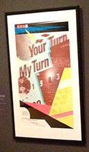
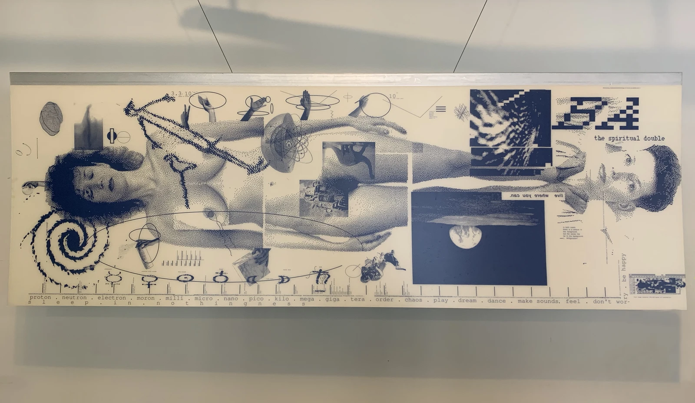
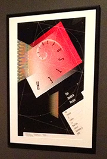
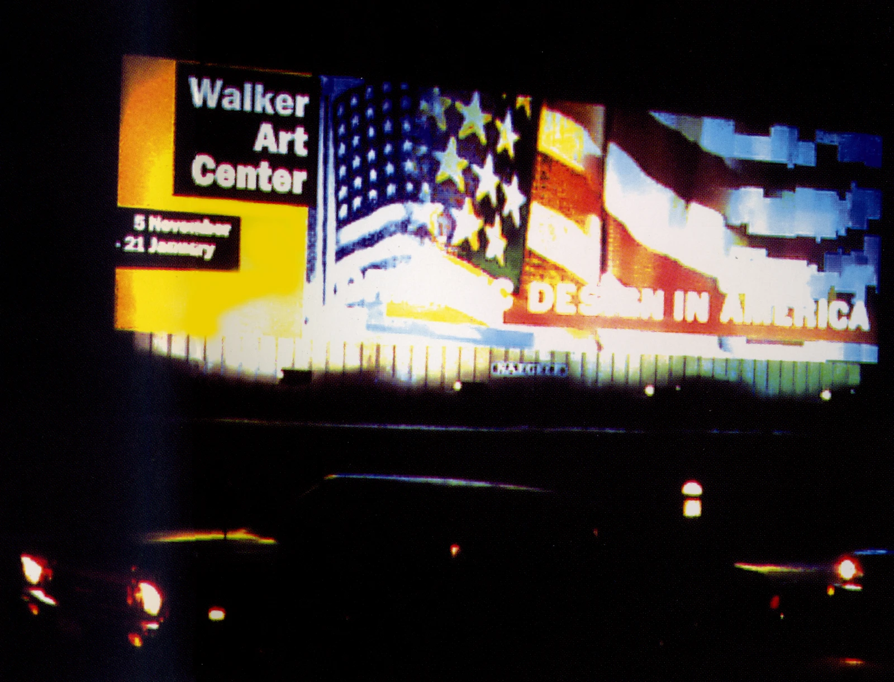

見るポイント
「Your Turn」「My Turn」を順に追うと、二つの言葉が斜めに駆け上がって見えます。下にある鋭い黒い形に目を移すと、今度は視線が右下へ戻ります。展示写真には、額の中にこの二つの方向が収まっています。
作品・制作の例7件を紹介しています。図版で紹介する作品は4作品。実作品図版4点、AAGA模写（Runway制作）0点。
文字と印刷物のデザインをめぐる潮流
New Wave Typography
文字の間を広げる。向きを変える。写真と重ねる。
ニュー・ウェーブは、整った文字組みを学びながら、その先の見せ方を試しました。
紙や印刷の実験と、コンピューターの実験を分けて見てみましょう。
実作品を見る

画像を表示できませんでした。下の出典ページで確認できます。
エイプリル・グレイマン / 1983年
紙にオフセット印刷とスクリーン印刷（展示風景の部分） ／ 同じポスターをクーパー・ヒューイット国立デザイン博物館が所蔵（1995-167-3、作者寄贈）。掲載図版は作者が記録した2012年「California’s Designing Women」展。
「Your Turn」「My Turn」を順に追うと、二つの言葉が斜めに駆け上がって見えます。下にある鋭い黒い形に目を移すと、今度は視線が右下へ戻ります。展示写真には、額の中にこの二つの方向が収まっています。
クーパー・ヒューイット国立デザイン博物館は、このポスターの文字を二色でずらして刷り、付属の眼鏡で立体に見せる仕組みを、作者がバーゼルで学んだ文字組みと結び付けて解説しています。
撮影・図版制作 MadeInSpace.la（作者の制作スタジオ。撮影者個人名の記載なし）
図版 MadeInSpace.la／エイプリル・グレイマン、Wikimedia Commons、CC BY-SA 4.0。作者が公開した展示写真から、このポスターの周囲を切り出しました。
出典で作品・資料を見る ↗CC BY-SA 4.0（表示・継承 4.0 国際）
原作の作者はエイプリル・グレイマンです。作者が主宰するMade in Space名義で、図版ごとに公開された写真を使っています。
スタジオ名義の図版ページが指定するCC BY-SA 4.0に従い、出典と変更点を記して、掲載用の画像にも同じ条件を適用しています。
掲載した部分は元の大きさのまま、展示写真から額ごと切り出しています。出典の原画像を開くと、左右の作品の配置も確認できます。
出典先の原画像を開く ↗作品・図版の関連資料 ↗画像の利用条件 ↗実作品を見る

画像を表示できませんでした。下の出典ページで確認できます。
エイプリル・グレイマン / 1986年
両面の折り畳みポスター、紙にオフセット印刷（掲載は片面） ／ ニューヨーク近代美術館ほかに同号の所蔵あり。図版は作者のスタジオによる撮影。
左の顔から横たわった体をたどると、途中に文字や写真の四角い枠が割り込みます。体を丸ごと見るときと、小さな文字の列を追うときでは、同じ紙の上で目が動く速さも変わります。
ウォーカー・アート・センターの雑誌一冊を、両面の長いポスターとして設計しました。ニューヨーク近代美術館は、作者の身体を等身大で取り込んだデジタルデザインの先駆例として所蔵しています。
撮影・図版制作 MadeInSpace.la（作者の制作スタジオ。撮影者個人名の記載なし）
図版 MadeInSpace.la／エイプリル・グレイマン、Wikimedia Commons、CC BY-SA 4.0。画面表示用に縮小し、WebPに変換しました。
出典で作品・資料を見る ↗CC BY-SA 4.0（表示・継承 4.0 国際）
原作の作者はエイプリル・グレイマンです。作者が主宰するMade in Space名義で、図版ごとに公開された写真を使っています。
スタジオ名義の図版ページが指定するCC BY-SA 4.0に従い、出典と変更点を記して、掲載用の画像にも同じ条件を適用しています。
出典先の原画像を開く ↗作品・図版の関連資料 ↗画像の利用条件 ↗画面表示用に写真全体の大きさを調整し、WebPにしました。
実作品を見る

画像を表示できませんでした。下の出典ページで確認できます。
エイプリル・グレイマン / 1988年
オフセット印刷の展覧会ポスター（展示風景の部分） ／ ニューヨーク近代美術館所蔵（81.1990）。掲載図版は作者が記録した2012年「California’s Designing Women」展。
斜めの赤い面に沿って、一文字ずつ向きが変わっています。文字を拾おうとすると、黒い地と赤い面の間を目が往復します。右下に置かれた小さな白い面が、その流れをいったん止めます。
ニューヨーク近代美術館が開いた、近代ポスターの歴史をたどる展覧会のための作品です。同館の所蔵記録と会期に合わせて1988年としています。
撮影・図版制作 MadeInSpace.la（作者の制作スタジオ。撮影者個人名の記載なし）
図版 MadeInSpace.la／エイプリル・グレイマン、Wikimedia Commons、CC BY-SA 4.0。作者が公開した展示写真から、このポスターの周囲を切り出しました。
出典で作品・資料を見る ↗CC BY-SA 4.0（表示・継承 4.0 国際）
原作の作者はエイプリル・グレイマンです。作者が主宰するMade in Space名義で、図版ごとに公開された写真を使っています。
スタジオ名義の図版ページが指定するCC BY-SA 4.0に従い、出典と変更点を記して、掲載用の画像にも同じ条件を適用しています。
掲載した部分は元の大きさのまま、展示写真から額ごと切り出しています。出典の原画像を開くと、左右の作品の配置も確認できます。
出典先の原画像を開く ↗作品・図版の関連資料 ↗画像の利用条件 ↗実作品を見る

画像を表示できませんでした。下の出典ページで確認できます。
エイプリル・グレイマン / 1989年
ミネアポリスのウォーカー・アート・センターの展覧会用ビルボード（夜の掲出記録） ／ 同じ企画のポスターはアートセンター・カレッジ・オブ・デザイン所蔵（H_M_C_T_ AGP-9）。写真に写る屋外広告そのものの現所蔵は未確認。
左端の館名は四角い枠に一列ずつ収まっています。右へ目を移すと、星、横帯、文字が重なり、輪郭がにじんで見えます。暗い街の中で、読み取れる文字と目を引く模様をどう並べたかに注目してください。
作者が国際グラフィック連盟のポートフォリオで、展覧会のポスターを町の広告に展開した例として発表しています。文字と映像を重ねる手法を、道路から見る大きさに移した作品です。
撮影・図版制作 MadeInSpace.la（作者の制作スタジオ。撮影者個人名の記載なし）
図版 MadeInSpace.la／エイプリル・グレイマン、Wikimedia Commons、CC BY-SA 4.0。画面表示用に縮小し、WebPに変換しました。
出典で作品・資料を見る ↗CC BY-SA 4.0（表示・継承 4.0 国際）
原作の作者はエイプリル・グレイマンです。作者が主宰するMade in Space名義で、図版ごとに公開された写真を使っています。
スタジオ名義の図版ページが指定するCC BY-SA 4.0に従い、出典と変更点を記して、掲載用の画像にも同じ条件を適用しています。
出典先の原画像を開く ↗作品・図版の関連資料 ↗画像の利用条件 ↗画面表示用に写真全体の大きさを調整し、WebPにしました。
文字・印刷の実験を示す印刷物
文字の組み立てを研究する仕事を伝える資料。後のカラフルなポスターだけで流れを説明しないために選びます。
作品・資料の出典を見る ↗作品名（出典表記）：Typographic Process, Nr 2. From Simple to Complex
Wolfgang Weingart（ヴォルフガング・ヴァインガルト） / 1973年 / 文字・印刷の実験を示す印刷物
展覧会ポスター
文字組みの実験を、展覧会を知らせる仕事に展開した例。文字の研究と実際の依頼をつなぎます。
作品・資料の出典を見る ↗作品名（出典表記）：Kunsthalle Basel Kunstkredit 76–77
Wolfgang Weingart（ヴォルフガング・ヴァインガルト） / 1977年 / 展覧会ポスター
紙にオフセット印刷とスクリーン印刷（展示風景の部分）
「Your Turn」「My Turn」を順に追うと、二つの言葉が斜めに駆け上がって見えます。下にある鋭い黒い形に目を移すと、今度は視線が右下へ戻ります。展示写真には、額の中にこの二つの方向が収まっています。
作品・資料の出典を見る ↗原題：Your Turn, My Turn, PDC 3, 3-D Poster
エイプリル・グレイマン / 1983年 / 紙にオフセット印刷とスクリーン印刷（展示風景の部分）
雑誌の特別号・ポスター
左の顔から横たわった体をたどると、途中に文字や写真の四角い枠が割り込みます。体を丸ごと見るときと、小さな文字の列を追うときでは、同じ紙の上で目が動く速さも変わります。
作品・資料の出典を見る ↗作品名（出典表記）：DOES IT MAKE SENSE? Design Quarterly #133
April Greiman（エイプリル・グレイマン） / 1986年 / 雑誌の特別号・ポスター
グレイマンによる文字と画像の実験を示す印刷物。ヴァインガルトと同じ制作技法だと決めずに比べます。
講演会ポスター
本人の講演を知らせる仕事。特別な雑誌号だけでなく、催しの情報を伝えるポスターも比較できます。
作品・資料の出典を見る ↗作品名（出典表記）：Snow White + the Seven Pixels, An Evening with April Greiman
April Greiman（エイプリル・グレイマン） / 1986年 / 講演会ポスター
オフセット印刷の展覧会ポスター（展示風景の部分）
斜めの赤い面に沿って、一文字ずつ向きが変わっています。文字を拾おうとすると、黒い地と赤い面の間を目が往復します。右下に置かれた小さな白い面が、その流れをいったん止めます。
作品・資料の出典を見る ↗原題：The Modern Poster, The Museum of Modern Art, New York
エイプリル・グレイマン / 1988年 / オフセット印刷の展覧会ポスター（展示風景の部分）
ミネアポリスのウォーカー・アート・センターの展覧会用ビルボード（夜の掲出記録）
左端の館名は四角い枠に一列ずつ収まっています。右へ目を移すと、星、横帯、文字が重なり、輪郭がにじんで見えます。暗い街の中で、読み取れる文字と目を引く模様をどう並べたかに注目してください。
作品・資料の出典を見る ↗原題：Graphic Design in America — exhibition billboard
エイプリル・グレイマン / 1989年 / ミネアポリスのウォーカー・アート・センターの展覧会用ビルボード（夜の掲出記録）
バーゼルで教えたヴォルフガング・ヴァインガルトは、印刷の技術を土台に実験を重ねました。
伝統を知らずに壊したのではありません。
彼に学んだエイプリル・グレイマンは米国で活動し、写真や映像、コンピューターも使いました。
ただし、この流れを「コンピューターが生んだ様式」とまとめるのは不正確です。
ヴァインガルト自身の制作と、グレイマンのデジタル表現では、道具の選び方が異なります。
白黒の実験も、色を重ねる作品もあります。決まった配色ではなく、文字と背景の見分けやすさを比べます。
文字の間、行の間、大きさ、向きに注目します。読みやすさを少し変えると、読む速さや感じ方はどう変わるでしょう。
写真、文字、点や線を別々の部品として見るだけでなく、重ねたときに何が起きるかを考えます。
文字をそろえる見えない線をグリッドと呼びます。整列している場所と、そこから外れる場所を探してみましょう。
スイスの整った文字組みと、完全に縁を切ったわけではありません。学んだ組み立て方を土台に、その限界を試しています。パンクの自主制作とも、使う道具や活動の場、目的を分けて比べます。
短い言葉を、文字の間を狭くした場合と広くした場合で書いてみましょう。同じ言葉でも、落ち着いて見えたり、遠くに離れて見えたりします。実際の掲示物では、必要な情報が読めるかも忘れずに確かめます。
名前を開くと、生没年、主な仕事、作品と出典を読めます。ここに挙げた人だけで、この項目の全体を説明するものではありません。
Wolfgang Weingart
活字組版を学び、バーゼルで教えたデザイナー。文字を組む手作業や印刷材料を使い、従来の配置の決まりを問い直しました。自分の制作と、学生たちの実験を促す教育を並行して続けました。
文字の研究を示す印刷物と、展覧会のポスターを比べられます。手作業を重んじた制作を、デジタル制作と同一視しません。
1973年の第2号。連作全体の年代や、別の番号の作品とは区別します。
作品名に76–77とありますが、所蔵館が示す制作年は1977年です。
人物の出典：ニューヨーク近代美術館 ↗ / バーゼル・デザイン学校 ↗ / チューリヒ・デザイン美術館 ↗ / ニューヨーク近代美術館 ↗ / ニューヨーク近代美術館 ↗
April Greiman
米国のグラフィックデザイナー。バーゼルで学んだ後、ロサンゼルスで制作しました。写真や文字を組み合わせ、早い時期からコンピューターを使った画像制作を試みています。
雑誌の折り込みと講演会のポスターから、印刷物の形式や制作技術を広げる仕事を見られます。
1986年の『デザイン・クォータリー』第133号のためのデザイン。両面を使った折り込み形式で、39.2024は所蔵番号です。
1986年の講演会ポスター。印刷はアート・リト社が担当しました。
人物の出典：ニューヨーク近代美術館 ↗ / ニューヨーク近代美術館 ↗ / ニューヨーク近代美術館 ↗ / ニューヨーク近代美術館 ↗
ヴァインガルトの印刷実験と、グレイマンの立体ポスター、折り畳み雑誌、展覧会の屋外広告をたどります。細部を見たいときは、各図版に添えた美術館や作者の資料も開けます。
作品・制作の例7件を紹介しています。図版で紹介する作品は4作品。実作品図版4点、AAGA模写（Runway制作）0点。